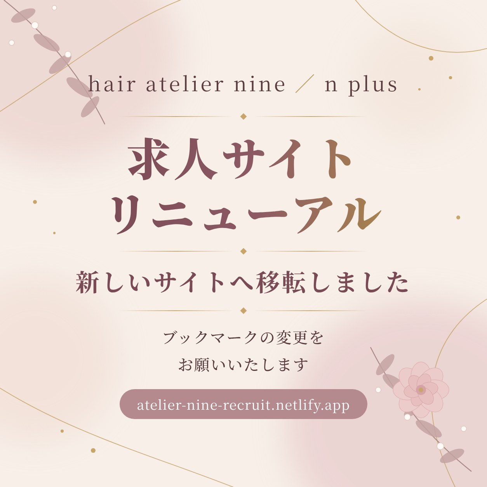

【お知らせ】求人サイトが新しくなりました✨
こんにちは！
株式会社アトリエ・ナイン代表の菅野です😊
今回は、求人サイトについてのお知らせです。
これまで使っていた求人サイト（Ameba Ownd）のサービス終了にともない、求人サイトを新しいサイトへ移転しました✨
■ 新しい求人サイトはこちら
https://atelier-nine-recruit.netlify.app/
以前のアドレス（atelier-nine.localinfo.jp）は、2026年12月24日で見られなくなります。
ブックマークやお気に入りに登録してくださっている方は、お手数ですが新しいアドレスへの変更をお願いいたします🙇♂️
■ 見やすく、分かりやすくしました
移転にあわせて、サイトの中身も少し整えました。
・トップページで、今募集している職種がすぐ分かるようにしました
・スマホでも読みやすいレイアウトにしました
・これまでのブログも、そのまま読めるようにしています
働き方や給与、1日の流れ、スタッフの声など、「実際にどんな職場なのか」が伝わるように、これからも少しずつ更新していきます🌿
■ 現在募集している職種✂️
hair atelier nine 森合店では、
・スタイリスト＜正社員＞
・アシスタント＜正社員＞
・新卒アシスタント＜2028年卒業予定の美容学生の方＞
を募集しています。
サロン見学や、ちょっとした質問だけでも大歓迎です。
お気軽に公式LINEからご連絡ください😊
【美容師求人・お問い合わせ】
https://atelier-nine-recruit.netlify.app/
――――――――――
株式会社アトリエ・ナイン
代表 菅野 勇紀
福島市で hair atelier nine（森合店・岡部店）と、アイラッシュサロン n plus を運営しています。
Instagram：atelier_nine.kanno
#福島市 #美容師求人 #福島市求人 #求人サイト #アトリエナイン
